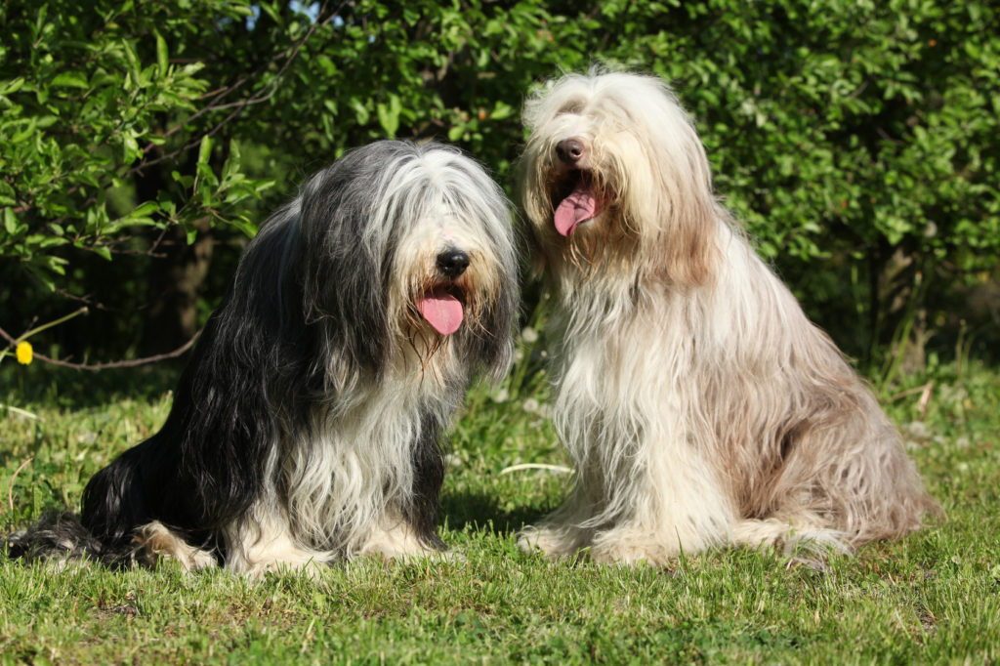

Quem adora cães bem peludos tem tudo para se encantar com a beleza e o carisma do Bearded Collie. O cãozinho é alerta, ativo e autoconfiante, por isso, é uma excelente opção de pet para tutores com certa experiência. Além desses traços, trata-se de um cachorro nada agressivo, com disposição e energia sem iguais.
De porte médio para grande, o cachorro Bearded Collie é bastante ativo e atlético. Isso significa que o animal precisa de uma rotina de exercícios e atividades físicas apropriada. A raça também é muito brincalhona e saltitante. Pode-se dizer que toda essa vivacidade vem do histórico do peludo, muito usado como cão de pastoreio. De todo modo, não se engane ao achar que ele serve apenas como trabalhador ou cão de guarda, pois é um cachorro bastante companheiro e dócil.
Como a maioria das raças de cachorro, é importante utilizar técnicas de socialização desde a fase do Bearded Collie filhote. Dessa forma, o animal aprende a lidar melhor com a hierarquia da casa e outras regrinhas importantes de comportamento. Uma dessas técnicas é expor o filhote a uma variedade grande de pessoas e lugares. O ideal é começar esse processo a partir das sete semanas de vida do animal. A treinabilidade do pet é mediana, mas o temperamento extrovertido facilita as lições.
Fizemos um gráfico nivelando de 0 a 5 as características da raça, veja a baixo!
Muita gente fica apaixonada com o excesso de fofura desse cachorro, e não poderia ser diferente. Apesar de toda a pelagem que o faz parecer maior, trata-se de um cão magro e de postura ativa e expressão esperta. Outras características marcantes são a cabeça bem proporcional, o focinho forte e cheio, além de olhos grandes e expressivos. As orelhas ficam caídas, com pelagem longa. Já a cauda é baixa e longa.
Cuidados com a higiene do Bearded Collie incluem banhos periódicos, tosas higiênicas quando necessário e atenção especial às orelhas e olhos. Verificações regulares e exames oftalmológicos, de tireoide e do quadril são recomendados para manter a saúde do pet.
Ao adotar um filhotinho, lembre-se de levar em consideração o período de adaptação do animal no novo lar. Por isso, adapte a sua rotina às necessidades nutricionais e físicas do seu amigo de quatro patas. Além de todos esses cuidados, vale lembrar que os filhotes de Bearded Collie precisam ser vacinados e vermifugados. Converse com o médico-veterinário do animal para saber se as vacinas estão em dia!